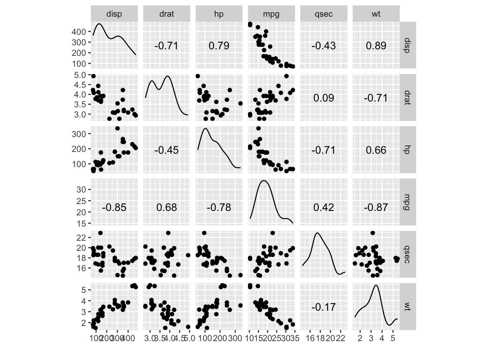
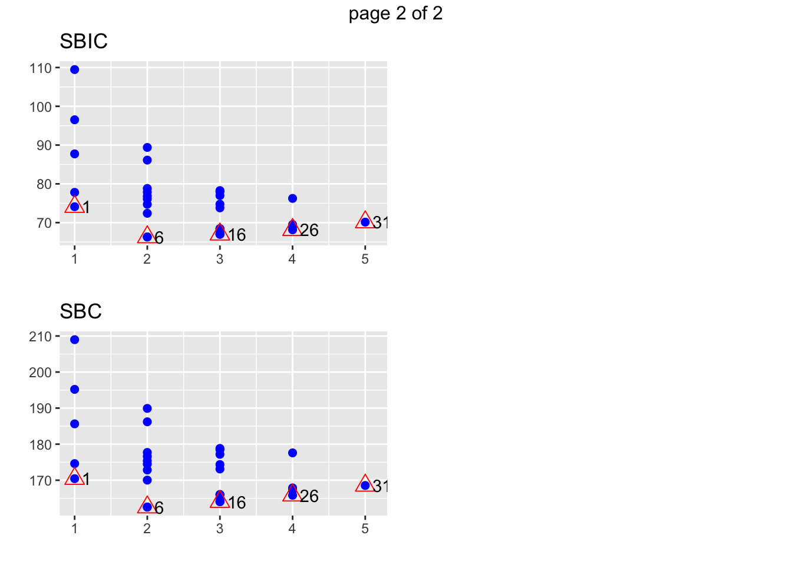

<!DOCTYPE html>

<html>

<head>

<meta charset="utf-8" />
<meta name="generator" content="pandoc" />
<meta http-equiv="X-UA-Compatible" content="IE=EDGE" />


<title>Lesson 23</title>

<script src="site_libs/jquery-1.11.3/jquery.min.js"></script>
<meta name="viewport" content="width=device-width, initial-scale=1" />
<link href="site_libs/bootstrap-3.3.5/css/flatly.min.css" rel="stylesheet" />
<script src="site_libs/bootstrap-3.3.5/js/bootstrap.min.js"></script>
<script src="site_libs/bootstrap-3.3.5/shim/html5shiv.min.js"></script>
<script src="site_libs/bootstrap-3.3.5/shim/respond.min.js"></script>
<script src="site_libs/jqueryui-1.11.4/jquery-ui.min.js"></script>
<link href="site_libs/tocify-1.9.1/jquery.tocify.css" rel="stylesheet" />
<script src="site_libs/tocify-1.9.1/jquery.tocify.js"></script>
<script src="site_libs/navigation-1.1/tabsets.js"></script>
<script src="site_libs/accessible-code-block-0.0.1/empty-anchor.js"></script>
<script src="site_libs/kePrint-0.0.1/kePrint.js"></script>
<link href="site_libs/lightable-0.0.1/lightable.css" rel="stylesheet" />
<link href="site_libs/font-awesome-5.1.0/css/all.css" rel="stylesheet" />
<link href="site_libs/font-awesome-5.1.0/css/v4-shims.css" rel="stylesheet" />
<!DOCTYPE html PUBLIC "-//W3C//DTD HTML 4.01//EN" "http://www.w3.org/TR/html4/strict.dtd">
<html>
<head>
  <meta http-equiv="Content-Type" content="text/html; charset=utf-8">
  <meta http-equiv="Content-Style-Type" content="text/css">
  <title></title>
  <meta name="Generator" content="Cocoa HTML Writer">
  <meta name="CocoaVersion" content="1504">
  <!-- this script changes the anchor position -->
  <!-- http://jsfiddle.net/ianclark001/rkocah23/ -->
<script>
(function(document, history, location) {
  var HISTORY_SUPPORT = !!(history && history.pushState);

  var anchorScrolls = {
    ANCHOR_REGEX: /^#[^ ]+$/,
    OFFSET_HEIGHT_PX: 65,

    /**
     * Establish events, and fix initial scroll position if a hash is provided.
     */
    init: function() {
      this.scrollToCurrent();
      $(window).on('hashchange', $.proxy(this, 'scrollToCurrent'));
      $('body').on('click', 'a', $.proxy(this, 'delegateAnchors'));
    },

    /**
     * Return the offset amount to deduct from the normal scroll position.
     * Modify as appropriate to allow for dynamic calculations
     */
    getFixedOffset: function() {
      return this.OFFSET_HEIGHT_PX;
    },

    /**
     * If the provided href is an anchor which resolves to an element on the
     * page, scroll to it.
     * @param  {String} href
     * @return {Boolean} - Was the href an anchor.
     */
    scrollIfAnchor: function(href, pushToHistory) {
      var match, anchorOffset;

      if(!this.ANCHOR_REGEX.test(href)) {
        return false;
      }

      match = document.getElementById(href.slice(1));

      if(match) {
        anchorOffset = $(match).offset().top - this.getFixedOffset();
        $('html, body').animate({ scrollTop: anchorOffset});

        // Add the state to history as-per normal anchor links
        if(HISTORY_SUPPORT && pushToHistory) {
          history.pushState({}, document.title, location.pathname + href);
        }
      }

      return !!match;
    },
    
    /**
     * Attempt to scroll to the current location's hash.
     */
    scrollToCurrent: function(e) {
      if(this.scrollIfAnchor(window.location.hash) && e) {
        e.preventDefault();
      }
    },

    /**
     * If the click event's target was an anchor, fix the scroll position.
     */
    delegateAnchors: function(e) {
      var elem = e.target;

      if(this.scrollIfAnchor(elem.getAttribute('href'), true)) {
        e.preventDefault();
      }
    }
  };

    $(document).ready($.proxy(anchorScrolls, 'init'));
})(window.document, window.history, window.location);
</script>

</head>
<body>
</body>
</html>

<style type="text/css">
  code{white-space: pre-wrap;}
  span.smallcaps{font-variant: small-caps;}
  span.underline{text-decoration: underline;}
  div.column{display: inline-block; vertical-align: top; width: 50%;}
  div.hanging-indent{margin-left: 1.5em; text-indent: -1.5em;}
  ul.task-list{list-style: none;}
    </style>


<style type="text/css">code{white-space: pre;}</style>
<style type="text/css" data-origin="pandoc">
code.sourceCode > span { display: inline-block; line-height: 1.25; }
code.sourceCode > span { color: inherit; text-decoration: inherit; }
code.sourceCode > span:empty { height: 1.2em; }
.sourceCode { overflow: visible; }
code.sourceCode { white-space: pre; position: relative; }
div.sourceCode { margin: 1em 0; }
pre.sourceCode { margin: 0; }
@media screen {
div.sourceCode { overflow: auto; }
}
@media print {
code.sourceCode { white-space: pre-wrap; }
code.sourceCode > span { text-indent: -5em; padding-left: 5em; }
}
pre.numberSource code
  { counter-reset: source-line 0; }
pre.numberSource code > span
  { position: relative; left: -4em; counter-increment: source-line; }
pre.numberSource code > span > a:first-child::before
  { content: counter(source-line);
    position: relative; left: -1em; text-align: right; vertical-align: baseline;
    border: none; display: inline-block;
    -webkit-touch-callout: none; -webkit-user-select: none;
    -khtml-user-select: none; -moz-user-select: none;
    -ms-user-select: none; user-select: none;
    padding: 0 4px; width: 4em;
    color: #aaaaaa;
  }
pre.numberSource { margin-left: 3em; border-left: 1px solid #aaaaaa;  padding-left: 4px; }
div.sourceCode
  {   }
@media screen {
code.sourceCode > span > a:first-child::before { text-decoration: underline; }
}
code span.al { color: #ff0000; font-weight: bold; } /* Alert */
code span.an { color: #60a0b0; font-weight: bold; font-style: italic; } /* Annotation */
code span.at { color: #7d9029; } /* Attribute */
code span.bn { color: #40a070; } /* BaseN */
code span.bu { } /* BuiltIn */
code span.cf { color: #007020; font-weight: bold; } /* ControlFlow */
code span.ch { color: #4070a0; } /* Char */
code span.cn { color: #880000; } /* Constant */
code span.co { color: #60a0b0; font-style: italic; } /* Comment */
code span.cv { color: #60a0b0; font-weight: bold; font-style: italic; } /* CommentVar */
code span.do { color: #ba2121; font-style: italic; } /* Documentation */
code span.dt { color: #902000; } /* DataType */
code span.dv { color: #40a070; } /* DecVal */
code span.er { color: #ff0000; font-weight: bold; } /* Error */
code span.ex { } /* Extension */
code span.fl { color: #40a070; } /* Float */
code span.fu { color: #06287e; } /* Function */
code span.im { } /* Import */
code span.in { color: #60a0b0; font-weight: bold; font-style: italic; } /* Information */
code span.kw { color: #007020; font-weight: bold; } /* Keyword */
code span.op { color: #666666; } /* Operator */
code span.ot { color: #007020; } /* Other */
code span.pp { color: #bc7a00; } /* Preprocessor */
code span.sc { color: #4070a0; } /* SpecialChar */
code span.ss { color: #bb6688; } /* SpecialString */
code span.st { color: #4070a0; } /* String */
code span.va { color: #19177c; } /* Variable */
code span.vs { color: #4070a0; } /* VerbatimString */
code span.wa { color: #60a0b0; font-weight: bold; font-style: italic; } /* Warning */

</style>
<script>
// apply pandoc div.sourceCode style to pre.sourceCode instead
(function() {
  var sheets = document.styleSheets;
  for (var i = 0; i < sheets.length; i++) {
    if (sheets[i].ownerNode.dataset["origin"] !== "pandoc") continue;
    try { var rules = sheets[i].cssRules; } catch (e) { continue; }
    for (var j = 0; j < rules.length; j++) {
      var rule = rules[j];
      // check if there is a div.sourceCode rule
      if (rule.type !== rule.STYLE_RULE || rule.selectorText !== "div.sourceCode") continue;
      var style = rule.style.cssText;
      // check if color or background-color is set
      if (rule.style.color === '' && rule.style.backgroundColor === '') continue;
      // replace div.sourceCode by a pre.sourceCode rule
      sheets[i].deleteRule(j);
      sheets[i].insertRule('pre.sourceCode{' + style + '}', j);
    }
  }
})();
</script>
<style type="text/css">
  pre:not([class]) {
    background-color: white;
  }
</style>


<style type="text/css">
h1 {
  font-size: 34px;
}
h1.title {
  font-size: 38px;
}
h2 {
  font-size: 30px;
}
h3 {
  font-size: 24px;
}
h4 {
  font-size: 18px;
}
h5 {
  font-size: 16px;
}
h6 {
  font-size: 12px;
}
.table th:not([align]) {
  text-align: left;
}
</style>


<link rel="stylesheet" href="style.css" type="text/css" />


<style type = "text/css">
.main-container {
  max-width: 940px;
  margin-left: auto;
  margin-right: auto;
}
code {
  color: inherit;
  background-color: rgba(0, 0, 0, 0.04);
}
img {
  max-width:100%;
}
.tabbed-pane {
  padding-top: 12px;
}
.html-widget {
  margin-bottom: 20px;
}
button.code-folding-btn:focus {
  outline: none;
}
summary {
  display: list-item;
}
</style>


<style type="text/css">
/* padding for bootstrap navbar */
body {
  padding-top: 60px;
  padding-bottom: 40px;
}
/* offset scroll position for anchor links (for fixed navbar)  */
.section h1 {
  padding-top: 65px;
  margin-top: -65px;
}
.section h2 {
  padding-top: 65px;
  margin-top: -65px;
}
.section h3 {
  padding-top: 65px;
  margin-top: -65px;
}
.section h4 {
  padding-top: 65px;
  margin-top: -65px;
}
.section h5 {
  padding-top: 65px;
  margin-top: -65px;
}
.section h6 {
  padding-top: 65px;
  margin-top: -65px;
}
.dropdown-submenu {
  position: relative;
}
.dropdown-submenu>.dropdown-menu {
  top: 0;
  left: 100%;
  margin-top: -6px;
  margin-left: -1px;
  border-radius: 0 6px 6px 6px;
}
.dropdown-submenu:hover>.dropdown-menu {
  display: block;
}
.dropdown-submenu>a:after {
  display: block;
  content: " ";
  float: right;
  width: 0;
  height: 0;
  border-color: transparent;
  border-style: solid;
  border-width: 5px 0 5px 5px;
  border-left-color: #cccccc;
  margin-top: 5px;
  margin-right: -10px;
}
.dropdown-submenu:hover>a:after {
  border-left-color: #ffffff;
}
.dropdown-submenu.pull-left {
  float: none;
}
.dropdown-submenu.pull-left>.dropdown-menu {
  left: -100%;
  margin-left: 10px;
  border-radius: 6px 0 6px 6px;
}
</style>

<script>
// manage active state of menu based on current page
$(document).ready(function () {
  // active menu anchor
  href = window.location.pathname
  href = href.substr(href.lastIndexOf('/') + 1)
  if (href === "")
    href = "index.html";
  var menuAnchor = $('a[href="' + href + '"]');

  // mark it active
  menuAnchor.parent().addClass('active');

  // if it's got a parent navbar menu mark it active as well
  menuAnchor.closest('li.dropdown').addClass('active');
});
</script>

<!-- tabsets -->

<style type="text/css">
.tabset-dropdown > .nav-tabs {
  display: inline-table;
  max-height: 500px;
  min-height: 44px;
  overflow-y: auto;
  background: white;
  border: 1px solid #ddd;
  border-radius: 4px;
}

.tabset-dropdown > .nav-tabs > li.active:before {
  content: "";
  font-family: 'Glyphicons Halflings';
  display: inline-block;
  padding: 10px;
  border-right: 1px solid #ddd;
}

.tabset-dropdown > .nav-tabs.nav-tabs-open > li.active:before {
  content: "&#xe258;";
  border: none;
}

.tabset-dropdown > .nav-tabs.nav-tabs-open:before {
  content: "";
  font-family: 'Glyphicons Halflings';
  display: inline-block;
  padding: 10px;
  border-right: 1px solid #ddd;
}

.tabset-dropdown > .nav-tabs > li.active {
  display: block;
}

.tabset-dropdown > .nav-tabs > li > a,
.tabset-dropdown > .nav-tabs > li > a:focus,
.tabset-dropdown > .nav-tabs > li > a:hover {
  border: none;
  display: inline-block;
  border-radius: 4px;
  background-color: transparent;
}

.tabset-dropdown > .nav-tabs.nav-tabs-open > li {
  display: block;
  float: none;
}

.tabset-dropdown > .nav-tabs > li {
  display: none;
}
</style>

<!-- code folding -->


<style type="text/css">

#TOC {
  margin: 25px 0px 20px 0px;
}
@media (max-width: 768px) {
#TOC {
  position: relative;
  width: 100%;
}
}

@media print {
.toc-content {
  /* see https://github.com/w3c/csswg-drafts/issues/4434 */
  float: right;
}
}

.toc-content {
  padding-left: 30px;
  padding-right: 40px;
}

div.main-container {
  max-width: 1200px;
}

div.tocify {
  width: 20%;
  max-width: 260px;
  max-height: 85%;
}

@media (min-width: 768px) and (max-width: 991px) {
  div.tocify {
    width: 25%;
  }
}

@media (max-width: 767px) {
  div.tocify {
    width: 100%;
    max-width: none;
  }
}

.tocify ul, .tocify li {
  line-height: 20px;
}

.tocify-subheader .tocify-item {
  font-size: 0.90em;
}

.tocify .list-group-item {
  border-radius: 0px;
}


</style>


</head>

<body>


<div class="container-fluid main-container">


<!-- setup 3col/9col grid for toc_float and main content  -->
<div class="row-fluid">
<div class="col-xs-12 col-sm-4 col-md-3">
<div id="TOC" class="tocify">
</div>
</div>

<div class="toc-content col-xs-12 col-sm-8 col-md-9">


<div class="navbar navbar-default  navbar-fixed-top" role="navigation">
  <div class="container">
    <div class="navbar-header">
      <button type="button" class="navbar-toggle collapsed" data-toggle="collapse" data-target="#navbar">
        <span class="icon-bar"></span>
        <span class="icon-bar"></span>
        <span class="icon-bar"></span>
      </button>
      <a class="navbar-brand" href="index.html">An R Tutorial for Beginners</a>
    </div>
    <div id="navbar" class="navbar-collapse collapse">
      <ul class="nav navbar-nav">
        <li>
  <a href="index.html">
    <span class="fas fa-home"></span>
     
    Home
  </a>
</li>
<li>
  <a href="about.html">
    <span class="fas fa-info-circle"></span>
     
    About
  </a>
</li>
<li class="dropdown">
  <a href="#" class="dropdown-toggle" data-toggle="dropdown" role="button" aria-expanded="false">
    <span class="fas fa-bars"></span>
     
    Lessons
     
    <span class="caret"></span>
  </a>
  <ul class="dropdown-menu" role="menu">
    <li class="dropdown-submenu">
      <a href="#" class="dropdown-toggle" data-toggle="dropdown" role="button" aria-expanded="false">Introduction</a>
      <ul class="dropdown-menu" role="menu">
        <li>
          <a href="R-course_lesson-1.html">Lesson 1</a>
        </li>
        <li>
          <a href="R-course_lesson-2.html">Lesson 2</a>
        </li>
        <li>
          <a href="R-course_lesson-3.html">Lesson 3</a>
        </li>
        <li>
          <a href="R-course_lesson-4.html">Lesson 4</a>
        </li>
      </ul>
    </li>
    <li class="dropdown-submenu">
      <a href="#" class="dropdown-toggle" data-toggle="dropdown" role="button" aria-expanded="false">Data Preparation</a>
      <ul class="dropdown-menu" role="menu">
        <li>
          <a href="R-course_lesson-5.html">Lesson 5</a>
        </li>
        <li>
          <a href="R-course_lesson-6.html">Lesson 6</a>
        </li>
        <li>
          <a href="R-course_lesson-7.html">Lesson 7</a>
        </li>
        <li>
          <a href="R-course_lesson-8.html">Lesson 8</a>
        </li>
        <li>
          <a href="R-course_lesson-9.html">Lesson 9</a>
        </li>
      </ul>
    </li>
    <li class="dropdown-submenu">
      <a href="#" class="dropdown-toggle" data-toggle="dropdown" role="button" aria-expanded="false">Programming</a>
      <ul class="dropdown-menu" role="menu">
        <li>
          <a href="R-course_lesson-10.html">Lesson 10</a>
        </li>
        <li>
          <a href="R-course_lesson-11.html">Lesson 11</a>
        </li>
        <li>
          <a href="R-course_lesson-12.html">Lesson 12</a>
        </li>
        <li>
          <a href="R-course_lesson-13.html">Lesson 13</a>
        </li>
        <li>
          <a href="R-course_lesson-14.html">Lesson 14</a>
        </li>
        <li>
          <a href="R-course_lesson-15.html">Lesson 15</a>
        </li>
        <li>
          <a href="R-course_lesson-16.html">Lesson 16</a>
        </li>
        <li>
          <a href="R-course_lesson-17.html">Lesson 17</a>
        </li>
      </ul>
    </li>
    <li class="dropdown-submenu">
      <a href="#" class="dropdown-toggle" data-toggle="dropdown" role="button" aria-expanded="false">Data Analysis</a>
      <ul class="dropdown-menu" role="menu">
        <li>
          <a href="R-course_lesson-18.html">Lesson 18</a>
        </li>
        <li>
          <a href="R-course_lesson-19.html">Lesson 19</a>
        </li>
        <li>
          <a href="R-course_lesson-20.html">Lesson 20</a>
        </li>
        <li>
          <a href="R-course_lesson-21.html">Lesson 21</a>
        </li>
        <li>
          <a href="R-course_lesson-22.html">Lesson 22</a>
        </li>
      </ul>
    </li>
    <li class="dropdown-submenu">
      <a href="#" class="dropdown-toggle" data-toggle="dropdown" role="button" aria-expanded="false">Data Analysis 2</a>
      <ul class="dropdown-menu" role="menu">
        <li>
          <a href="R-course_lesson-23.html">Lesson 23</a>
        </li>
        <li>
          <a href="R-course_lesson-24.html">Lesson 24</a>
        </li>
        <li>
          <a href="R-course_lesson-25.html">Lesson 25</a>
        </li>
      </ul>
    </li>
  </ul>
</li>
      </ul>
      <ul class="nav navbar-nav navbar-right">
        
      </ul>
    </div><!--/.nav-collapse -->
  </div><!--/.container -->
</div><!--/.navbar -->

<div class="fluid-row" id="header">


<h1 class="title toc-ignore">R Simple, Multiple Linear and Stepwise Regression (with Example)</h1>

</div>


<div id="simple-linear-regression" class="section level1">
<h1>Simple Linear regression</h1>
<p>Linear regression answers a simple question: Can you measure an exact relationship between one target variables and a set of predictors?</p>
<p>The simplest of probabilistic models is the straight line model: <span class="math display">\[y=\beta_0+\beta_1x+\epsilon\]</span> where</p>
<ul>
<li><span class="math inline">\(y\)</span> = dependent variable</li>
<li><span class="math inline">\(x\)</span> = independent variable</li>
<li><span class="math inline">\(\epsilon\)</span> = random error component</li>
<li><span class="math inline">\(\beta_0\)</span> = intercept</li>
<li><span class="math inline">\(\beta_1\)</span> = coefficient of <span class="math inline">\(x\)</span></li>
</ul>
<p>Consider the following plot:</p>
<p align="center">

</p>
<p>The equation is <span class="math inline">\(y=\beta_0+\beta_1x+\epsilon\)</span>. <span class="math inline">\(\beta_0\)</span> is the intercept. If <span class="math inline">\(x\)</span> equals to <span class="math inline">\(0\)</span>, <span class="math inline">\(y\)</span> will be equal to the intercept, <span class="math inline">\(4.77\)</span>. <span class="math inline">\(\beta_1\)</span> is the slope of the line. It tells in which proportion <span class="math inline">\(y\)</span> varies when <span class="math inline">\(x\)</span> varies.</p>
<p>To estimate the optimal values of <span class="math inline">\(\beta_0\)</span> and <span class="math inline">\(\beta_1\)</span>, you use a method called <strong>Ordinary Least Squares (OLS)</strong>. This method tries to find the parameters that minimize the sum of the squared errors, that is the vertical distance between the predicted <span class="math inline">\(y\)</span> values and the actual <span class="math inline">\(y\)</span> values. The difference is known as the <strong>error term</strong>.</p>
<p>Before you estimate the model, you can determine whether a linear relationship between <span class="math inline">\(y\)</span> and <span class="math inline">\(x\)</span> is plausible by plotting a scatterplot.</p>
<div id="scatterplot" class="section level2">
<h2>Scatterplot</h2>
<p>We will use a very simple dataset to explain the concept of simple linear regression. We will import the Average Heights and weights for American Women. The dataset contains 15 observations. You want to measure whether Heights are positively correlated with weights.</p>
<div class="sourceCode" id="cb1"><pre class="sourceCode r"><code class="sourceCode r"><span id="cb1-1"><a href="#cb1-1"></a><span class="kw">library</span>(ggplot2)</span>
<span id="cb1-2"><a href="#cb1-2"></a>path &lt;-<span class="st"> &#39;https://raw.githubusercontent.com/guru99-edu/R-Programming/master/women.csv&#39;</span></span>
<span id="cb1-3"><a href="#cb1-3"></a>df &lt;-<span class="kw">read.csv</span>(path)</span>
<span id="cb1-4"><a href="#cb1-4"></a><span class="kw">ggplot</span>(df,<span class="kw">aes</span>(<span class="dt">x=</span>height, <span class="dt">y =</span>  weight)) <span class="op">+</span><span class="st"> </span><span class="kw">geom_point</span>()</span></code></pre></div>
<p> The scatterplot suggests a general tendency for y to increase as x increases. In the next step, you will measure by how much increases for each additional.</p>
</div>
<div id="least-squares-estimates" class="section level2">
<h2>Least Squares Estimates</h2>
<p>In a simple OLS regression, the computation of <span class="math inline">\(\beta_0\)</span> and <span class="math inline">\(\beta_1\)</span> is straightforward. The goal is not to show the derivation in this tutorial. You will only write the formula.</p>
<p>You want to estimate: <span class="math inline">\(y=\beta_0+\beta_1x+\epsilon\)</span></p>
<p>The goal of the OLS regression is to minimize the following equation: <span class="math display">\[\sum(y_i-\hat{y}_i)^2=\sum e_i^2\]</span> where</p>
<p><span class="math inline">\(y_i\)</span> is the actual value and <span class="math inline">\(\hat{y}_i\)</span> is the predicted value.</p>
<p>The solution for <span class="math inline">\(\beta_0\)</span> is <span class="math inline">\(\hat{\beta}_0=\bar{y}-\hat{\beta}_1\bar{x}\)</span></p>
<p>Note that <span class="math inline">\(\bar{x}\)</span> means the average value of <span class="math inline">\(x\)</span></p>
<p>The solution for <span class="math inline">\(\beta_1\)</span> is <span class="math inline">\(\hat{\beta}_1=\frac{\text{Cov}(x,y)}{\text{Var}(x)}\)</span></p>
<p>In R, you can use the <em>cov()</em> and <em>var()</em> function to estimate <span class="math inline">\(\beta_1\)</span> and you can use the <em>mean()</em> function to estimate <span class="math inline">\(\beta_0\)</span></p>
<div class="sourceCode" id="cb2"><pre class="sourceCode r"><code class="sourceCode r"><span id="cb2-1"><a href="#cb2-1"></a>beta &lt;-<span class="st"> </span><span class="kw">cov</span>(df<span class="op">$</span>height, df<span class="op">$</span>weight) <span class="op">/</span><span class="st"> </span><span class="kw">var</span> (df<span class="op">$</span>height)</span>
<span id="cb2-2"><a href="#cb2-2"></a>beta</span></code></pre></div>
<pre><code>## [1] 3.45</code></pre>
<div class="sourceCode" id="cb4"><pre class="sourceCode r"><code class="sourceCode r"><span id="cb4-1"><a href="#cb4-1"></a>alpha &lt;-<span class="st"> </span><span class="kw">mean</span>(df<span class="op">$</span>weight) <span class="op">-</span><span class="st"> </span>beta <span class="op">*</span><span class="st"> </span><span class="kw">mean</span>(df<span class="op">$</span>height)</span>
<span id="cb4-2"><a href="#cb4-2"></a>alpha</span></code></pre></div>
<pre><code>## [1] -87.51667</code></pre>
<p>The beta coefficient implies that for each additional height, the weight increases by <span class="math inline">\(3.45\)</span>.</p>
<p>Estimating simple linear equation manually is not ideal. R provides a suitable function to estimate these parameters. You will see this function shortly. Before that, we will introduce how to compute by hand a simple linear regression model. In your journey of data scientist, you will barely or never estimate a simple linear model. In most situation, regression tasks are performed on a lot of estimators.</p>
</div>
</div>
<div id="multiple-linear-regression" class="section level1">
<h1>Multiple Linear regression</h1>
<p>More practical applications of regression analysis employ models that are more complex than the simple straight-line model. The probabilistic model that includes more than one independent variable is called multiple regression models. The general form of this model is: <span class="math display">\[y=\beta_0+\beta_1x_1+\beta_2x_2+\cdots+\beta_kx_k+\epsilon\]</span> In matrix notation, you can rewrite the model: <span class="math display">\[Y=X\beta+\epsilon\]</span> The dependent variable y is now a function of <span class="math inline">\(k\)</span> independent variables. The value of the coefficient <span class="math inline">\(\beta_i\)</span> determines the contribution of the independent variable <span class="math inline">\(x_i\)</span> and <span class="math inline">\(\beta_0\)</span>.</p>
<p>We briefly introduce the assumption we made about the random error <span class="math inline">\(\epsilon\)</span> of the OLS:</p>
<ul>
<li>Mean equal to <span class="math inline">\(0\)</span></li>
<li>Variance equal to <span class="math inline">\(\sigma^2\)</span></li>
<li>Normal distribution</li>
<li>Random errors are independent (in a probabilistic sense)</li>
</ul>
<p>You need to solve for <span class="math inline">\(\beta\)</span>, the vector of regression coefficients that minimise the sum of the squared errors between the predicted and actual y values.</p>
<p>The closed-form solution is: <span class="math display">\[\hat{\beta}=(X^TX)^{-1}X^Ty\]</span></p>
<p>with:</p>
<ul>
<li><span class="math inline">\(X^T\)</span> indicates the <strong>transpose</strong> of the matrix <span class="math inline">\(X\)</span></li>
<li><span class="math inline">\((X^TX)^{-1}\)</span> indicates the <strong>invertible matrix</strong></li>
</ul>
<p>We use the mtcars dataset. You are already familiar with the dataset. Our goal is to predict the mile per gallon over a set of features.</p>
<div id="continuous-variables" class="section level2">
<h2>Continuous variables</h2>
<p>For now, you will only use the continuous variables and put aside categorical features. The variable <em>am</em> is a binary variable taking the value of 1 if the transmission is manual and 0 for automatic cars; <em>vs</em> is also a binary variable.</p>
<div class="sourceCode" id="cb6"><pre class="sourceCode r"><code class="sourceCode r"><span id="cb6-1"><a href="#cb6-1"></a><span class="kw">library</span>(dplyr)</span>
<span id="cb6-2"><a href="#cb6-2"></a>df &lt;-<span class="st"> </span>mtcars <span class="op">%&gt;%</span><span class="st"> </span><span class="kw">select</span>(<span class="op">-</span><span class="kw">c</span>(am, vs, cyl, gear, carb))</span>
<span id="cb6-3"><a href="#cb6-3"></a><span class="kw">glimpse</span>(df)</span></code></pre></div>
<pre><code>## Rows: 32
## Columns: 6
## $ mpg  &lt;dbl&gt; 21.0, 21.0, 22.8, 21.4, 18.7, 18.1, 14.3, 24.4, 22.8, 19.2, 17.8…
## $ disp &lt;dbl&gt; 160.0, 160.0, 108.0, 258.0, 360.0, 225.0, 360.0, 146.7, 140.8, 1…
## $ hp   &lt;dbl&gt; 110, 110, 93, 110, 175, 105, 245, 62, 95, 123, 123, 180, 180, 18…
## $ drat &lt;dbl&gt; 3.90, 3.90, 3.85, 3.08, 3.15, 2.76, 3.21, 3.69, 3.92, 3.92, 3.92…
## $ wt   &lt;dbl&gt; 2.620, 2.875, 2.320, 3.215, 3.440, 3.460, 3.570, 3.190, 3.150, 3…
## $ qsec &lt;dbl&gt; 16.46, 17.02, 18.61, 19.44, 17.02, 20.22, 15.84, 20.00, 22.90, 1…</code></pre>
<p>You can use the lm() function to compute the parameters. The basic syntax of this function is:</p>
<div class="sourceCode" id="cb8"><pre class="sourceCode r"><code class="sourceCode r"><span id="cb8-1"><a href="#cb8-1"></a><span class="kw">lm</span>(formula, data, subset)</span></code></pre></div>
<p><strong>Arguments:</strong></p>
<ul>
<li><strong>formula</strong>: The equation you want to estimate<br />
</li>
<li><strong>data</strong>: The dataset used</li>
<li><strong>subset</strong>: Estimate the model on a subset of the dataset</li>
</ul>
<p>Remember an equation is of the following form <span class="math display">\[y=\beta_0+\beta_1x_1+\beta_2x_2+\cdots+\beta_kx_k+\epsilon\]</span> in R</p>
<ul>
<li>The symbol = is replaced by ~</li>
<li>Each <span class="math inline">\(x\)</span> is replaced by the variable name</li>
<li>If you want to drop the constant, add -1 at the end of the formula</li>
</ul>
<p><strong>Example:</strong></p>
<p>You want to estimate the weight of individuals based on their height and revenue. The equation is <span class="math display">\[weigh = \beta_0+\beta_1height+\beta_2revenue+\epsilon\]</span> The equation in R for our example is written as: <span class="math inline">\(weigh\)</span> ~ <span class="math inline">\(height + revenue\)</span></p>
<p>Your objective is to estimate the mile per gallon based on a set of variables. The equation to estimate is: <span class="math display">\[mpg=\beta_0+\beta_1disp+\beta_2hp+\beta_3drat+\beta_4wt+\epsilon\]</span> You will estimate your first linear regression and store the result in the fit object.</p>
<div class="sourceCode" id="cb9"><pre class="sourceCode r"><code class="sourceCode r"><span id="cb9-1"><a href="#cb9-1"></a>model &lt;-<span class="st"> </span>mpg <span class="op">~</span><span class="st"> </span>disp <span class="op">+</span><span class="st"> </span>hp <span class="op">+</span><span class="st"> </span>drat <span class="op">+</span><span class="st"> </span>wt</span>
<span id="cb9-2"><a href="#cb9-2"></a>fit &lt;-<span class="st"> </span><span class="kw">lm</span>(model, <span class="dt">data =</span> df)</span>
<span id="cb9-3"><a href="#cb9-3"></a>fit</span></code></pre></div>
<pre><code>## 
## Call:
## lm(formula = model, data = df)
## 
## Coefficients:
## (Intercept)         disp           hp         drat           wt  
##   29.148738     0.003815    -0.034784     1.768049    -3.479668</code></pre>
<p><strong>Code Explanation</strong></p>
<ul>
<li>model &lt;- mpg ~ disp + hp + drat+ wt: Store the model to estimate</li>
<li>lm(model, data = df): Estimate the model with the data frame df</li>
</ul>
<p>The output does not provide enough information about the quality of the fit. You can access more details such as the significance of the coefficients, the degree of freedom and the shape of the residuals with the <em>summary()</em> function.</p>
<div class="sourceCode" id="cb11"><pre class="sourceCode r"><code class="sourceCode r"><span id="cb11-1"><a href="#cb11-1"></a><span class="kw">summary</span>(fit)</span></code></pre></div>
<pre><code>## 
## Call:
## lm(formula = model, data = df)
## 
## Residuals:
##     Min      1Q  Median      3Q     Max 
## -3.5077 -1.9052 -0.5057  0.9821  5.6883 
## 
## Coefficients:
##              Estimate Std. Error t value Pr(&gt;|t|)    
## (Intercept) 29.148738   6.293588   4.631  8.2e-05 ***
## disp         0.003815   0.010805   0.353  0.72675    
## hp          -0.034784   0.011597  -2.999  0.00576 ** 
## drat         1.768049   1.319779   1.340  0.19153    
## wt          -3.479668   1.078371  -3.227  0.00327 ** 
## ---
## Signif. codes:  0 &#39;***&#39; 0.001 &#39;**&#39; 0.01 &#39;*&#39; 0.05 &#39;.&#39; 0.1 &#39; &#39; 1
## 
## Residual standard error: 2.602 on 27 degrees of freedom
## Multiple R-squared:  0.8376, Adjusted R-squared:  0.8136 
## F-statistic: 34.82 on 4 and 27 DF,  p-value: 2.704e-10</code></pre>
<p>Inference from the above table output</p>
<ul>
<li>The above table proves that there is a strong negative relationship between <em>wt</em> and mileage, a small negative relationship with <em>hp</em> and a positive relationship with <em>drat</em>. However only the variable <em>wt</em> and <em>hp</em> has a statistical impact on <em>mpg</em>. Remember, to test a hypothesis in statistic, we use:
<ul>
<li>H0: The predictor has a meaningful impact on <span class="math inline">\(y\)</span></li>
<li>H1: No statistical impact</li>
<li>If the <span class="math inline">\(p\)</span>-value is lower than 0.05, it indicates the variable is statistically significant</li>
</ul></li>
<li>Adjusted R-squared: Variance explained by the model. In your model, the model explained 81 percent of the variance of 4y$. R squared is always between 0 and 1. The higher the better.</li>
</ul>
<p>You can run the ANOVA test to estimate the effect of each feature on the variances with the anova() function.</p>
<div class="sourceCode" id="cb13"><pre class="sourceCode r"><code class="sourceCode r"><span id="cb13-1"><a href="#cb13-1"></a><span class="kw">anova</span>(fit)</span></code></pre></div>
<div class="kable-table">

<table>
<thead>
<tr>
<th style="text-align:left;">
</th>
<th style="text-align:right;">
Df
</th>
<th style="text-align:right;">
Sum Sq
</th>
<th style="text-align:right;">
Mean Sq
</th>
<th style="text-align:right;">
F value
</th>
<th style="text-align:right;">
Pr(&gt;F)
</th>
</tr>
</thead>
<tbody>
<tr>
<td style="text-align:left;">
disp
</td>
<td style="text-align:right;">
1
</td>
<td style="text-align:right;">
808.88850
</td>
<td style="text-align:right;">
808.888498
</td>
<td style="text-align:right;">
119.450231
</td>
<td style="text-align:right;">
0.0000000
</td>
</tr>
<tr>
<td style="text-align:left;">
hp
</td>
<td style="text-align:right;">
1
</td>
<td style="text-align:right;">
33.66525
</td>
<td style="text-align:right;">
33.665254
</td>
<td style="text-align:right;">
4.971418
</td>
<td style="text-align:right;">
0.0342811
</td>
</tr>
<tr>
<td style="text-align:left;">
drat
</td>
<td style="text-align:right;">
1
</td>
<td style="text-align:right;">
30.14753
</td>
<td style="text-align:right;">
30.147534
</td>
<td style="text-align:right;">
4.451948
</td>
<td style="text-align:right;">
0.0442702
</td>
</tr>
<tr>
<td style="text-align:left;">
wt
</td>
<td style="text-align:right;">
1
</td>
<td style="text-align:right;">
70.50834
</td>
<td style="text-align:right;">
70.508336
</td>
<td style="text-align:right;">
10.412111
</td>
<td style="text-align:right;">
0.0032722
</td>
</tr>
<tr>
<td style="text-align:left;">
Residuals
</td>
<td style="text-align:right;">
27
</td>
<td style="text-align:right;">
182.83757
</td>
<td style="text-align:right;">
6.771762
</td>
<td style="text-align:right;">
NA
</td>
<td style="text-align:right;">
NA
</td>
</tr>
</tbody>
</table>
</div>
<p>A more conventional way to estimate the model performance is to display the residual against different measures.</p>
<p>You can use the <em>plot()</em> function to show four graphs:</p>
<ul>
<li>Residuals vs Fitted values</li>
<li>Normal Q-Q plot: Theoretical Quartile vs Standardized residuals</li>
<li>Scale-Location: Fitted values vs Square roots of the standardised residuals</li>
<li>Residuals vs Leverage: Leverage vs Standardized residuals</li>
</ul>
<p>You add the code <em>par(mfrow = c(2, 2))</em> before <em>plot(fit)</em>. If you don’t add this line of code, R prompts you to hit the enter command to display the next graph.</p>
<div class="sourceCode" id="cb14"><pre class="sourceCode r"><code class="sourceCode r"><span id="cb14-1"><a href="#cb14-1"></a><span class="kw">par</span>(<span class="dt">mfrow =</span> <span class="kw">c</span>(<span class="dv">2</span>, <span class="dv">2</span>))</span>
<span id="cb14-2"><a href="#cb14-2"></a><span class="kw">plot</span>(fit)</span></code></pre></div>
<p> The <em>lm()</em> formula returns a list containing a lot of useful information. You can access them with the fit object you have created, followed by the <em>$</em> sign and the information you want to extract.</p>
<ul>
<li>coefficients: `fit$coefficients’</li>
<li>residuals: `fit$residuals’</li>
<li>fitted value: `fit$fitted.values’</li>
</ul>
</div>
</div>
<div id="factors-regression" class="section level1">
<h1>Factors regression</h1>
<p>In the last model estimation, you regress mpg on continuous variables only. It is straightforward to add factor variables to the model. You add the variable <em>am</em> to your model. It is important to be sure the variable is a factor level and not continuous.</p>
<div class="sourceCode" id="cb15"><pre class="sourceCode r"><code class="sourceCode r"><span id="cb15-1"><a href="#cb15-1"></a>df &lt;-<span class="st"> </span>mtcars <span class="op">%&gt;%</span><span class="st"> </span></span>
<span id="cb15-2"><a href="#cb15-2"></a><span class="st">  </span><span class="kw">mutate</span>(<span class="dt">cyl =</span> <span class="kw">factor</span>(cyl), </span>
<span id="cb15-3"><a href="#cb15-3"></a>         <span class="dt">vs =</span> <span class="kw">factor</span>(vs),</span>
<span id="cb15-4"><a href="#cb15-4"></a>         <span class="dt">am =</span> <span class="kw">factor</span>(am),</span>
<span id="cb15-5"><a href="#cb15-5"></a>         <span class="dt">gear =</span> <span class="kw">factor</span>(gear),</span>
<span id="cb15-6"><a href="#cb15-6"></a>         <span class="dt">carb =</span> <span class="kw">factor</span>(carb))</span>
<span id="cb15-7"><a href="#cb15-7"></a>model &lt;-<span class="st"> </span>mpg <span class="op">~</span><span class="st"> </span>.</span>
<span id="cb15-8"><a href="#cb15-8"></a><span class="kw">summary</span>(<span class="kw">lm</span>(model, <span class="dt">data =</span> df))</span></code></pre></div>
<pre><code>## 
## Call:
## lm(formula = model, data = df)
## 
## Residuals:
##     Min      1Q  Median      3Q     Max 
## -3.5087 -1.3584 -0.0948  0.7745  4.6251 
## 
## Coefficients:
##             Estimate Std. Error t value Pr(&gt;|t|)  
## (Intercept) 23.87913   20.06582   1.190   0.2525  
## cyl6        -2.64870    3.04089  -0.871   0.3975  
## cyl8        -0.33616    7.15954  -0.047   0.9632  
## disp         0.03555    0.03190   1.114   0.2827  
## hp          -0.07051    0.03943  -1.788   0.0939 .
## drat         1.18283    2.48348   0.476   0.6407  
## wt          -4.52978    2.53875  -1.784   0.0946 .
## qsec         0.36784    0.93540   0.393   0.6997  
## vs1          1.93085    2.87126   0.672   0.5115  
## am1          1.21212    3.21355   0.377   0.7113  
## gear4        1.11435    3.79952   0.293   0.7733  
## gear5        2.52840    3.73636   0.677   0.5089  
## carb2       -0.97935    2.31797  -0.423   0.6787  
## carb3        2.99964    4.29355   0.699   0.4955  
## carb4        1.09142    4.44962   0.245   0.8096  
## carb6        4.47757    6.38406   0.701   0.4938  
## carb8        7.25041    8.36057   0.867   0.3995  
## ---
## Signif. codes:  0 &#39;***&#39; 0.001 &#39;**&#39; 0.01 &#39;*&#39; 0.05 &#39;.&#39; 0.1 &#39; &#39; 1
## 
## Residual standard error: 2.833 on 15 degrees of freedom
## Multiple R-squared:  0.8931, Adjusted R-squared:  0.779 
## F-statistic:  7.83 on 16 and 15 DF,  p-value: 0.000124</code></pre>
<p>R uses the first factor level as a base group. You need to compare the coefficients of the other group against the base group.</p>
</div>
<div id="stepwise-regression" class="section level1">
<h1>Stepwise regression</h1>
<p>The last part of this tutorial deals with the stepwise regression algorithm. The purpose of this algorithm is to add and remove potential candidates in the models and keep those who have a significant impact on the dependent variable. This algorithm is meaningful when the dataset contains a large list of predictors. You don’t need to manually add and remove the independent variables. The stepwise regression is built to select the best candidates to fit the model.</p>
<p>Let’s see in action how it works. You use the <em>mtcars</em> dataset with the continuous variables only for pedagogical illustration. Before you begin analysis, its good to establish variations between the data with a correlation matrix. The <em>GGally</em> library is an extension of ggplot2.</p>
<p>The library includes different functions to show summary statistics such as correlation and distribution of all the variables in a matrix. We will use the ggscatmat function, but you can refer to the vignette for more information about the <em>GGally</em> library.</p>
<p>The basic syntax for <em>ggscatmat()</em> is:</p>
<div class="sourceCode" id="cb17"><pre class="sourceCode r"><code class="sourceCode r"><span id="cb17-1"><a href="#cb17-1"></a><span class="kw">ggscatmat</span>(df, <span class="dt">columns =</span> <span class="dv">1</span><span class="op">:</span><span class="kw">ncol</span>(df), <span class="dt">corMethod =</span> <span class="st">&quot;pearson&quot;</span>)</span></code></pre></div>
<p><strong>arguments:</strong></p>
<ul>
<li>df: A matrix of continuous variables</li>
<li>columns: Pick up the columns to use in the function. By default, all columns are used</li>
<li>corMethod: Define the function to compute the correlation between variable. By default, the algorithm uses the Pearson formula</li>
</ul>
<p>You display the correlation for all your variables and decides which one will be the best candidates for the first step of the stepwise regression. There are some strong correlations between your variables and the dependent variable, <em>mpg</em>.</p>
<div class="sourceCode" id="cb18"><pre class="sourceCode r"><code class="sourceCode r"><span id="cb18-1"><a href="#cb18-1"></a><span class="kw">library</span>(GGally)</span>
<span id="cb18-2"><a href="#cb18-2"></a>df &lt;-<span class="st"> </span>mtcars <span class="op">%&gt;%</span><span class="st"> </span><span class="kw">select</span>(<span class="op">-</span><span class="kw">c</span>(am, vs, cyl, gear, carb))</span>
<span id="cb18-3"><a href="#cb18-3"></a><span class="kw">ggscatmat</span>(df, <span class="dt">columns =</span> <span class="dv">1</span><span class="op">:</span><span class="kw">ncol</span>(df))</span></code></pre></div>
<p> Variables selection is an important part to fit a model. The stepwise regression will perform the searching process automatically. To estimate how many possible choices there are in the dataset, you compute with <span class="math inline">\(k\)</span> is the number of predictors. The amount of possibilities grows bigger with the number of independent variables. That’s why you need to have an automatic search.</p>
<p>You need to install the <em>olsrr</em> package from CRAN. You can install it directly from the command line:</p>
<div class="sourceCode" id="cb19"><pre class="sourceCode r"><code class="sourceCode r"><span id="cb19-1"><a href="#cb19-1"></a><span class="kw">install.packages</span>(<span class="st">&quot;olsrr&quot;</span>)</span></code></pre></div>
<p>You can plot all the subsets of possibilities with the fit criteria (i.e. R-square, Adjusted R-square, Bayesian criteria). The model with the lowest AIC criteria will be the final model.</p>
<div class="sourceCode" id="cb20"><pre class="sourceCode r"><code class="sourceCode r"><span id="cb20-1"><a href="#cb20-1"></a><span class="kw">library</span>(olsrr)</span>
<span id="cb20-2"><a href="#cb20-2"></a>model &lt;-<span class="st"> </span>mpg <span class="op">~</span><span class="st"> </span>.</span>
<span id="cb20-3"><a href="#cb20-3"></a>fit &lt;-<span class="st"> </span><span class="kw">lm</span>(model, <span class="dt">data =</span> df)</span>
<span id="cb20-4"><a href="#cb20-4"></a>test &lt;-<span class="st"> </span><span class="kw">ols_step_all_possible</span>(fit)</span>
<span id="cb20-5"><a href="#cb20-5"></a><span class="kw">plot</span>(test)</span></code></pre></div>
<p> <strong>Code Explanation</strong></p>
<ul>
<li>mpg ~ .: Construct the model to estimate</li>
<li>lm(model, data = df): Run the OLS model</li>
<li>ols_step_all_possible(fit): Construct the graphs with the relevant statistical information</li>
<li>plot(test): Plot the graphs</li>
</ul>
<p>Linear regression models use the t-test to estimate the statistical impact of an independent variable on the dependent variable. Researchers set the maximum threshold at 10 percent, with lower values indicates a stronger statistical link. The strategy of the stepwise regression is constructed around this test to add and remove potential candidates. The algorithm works as follow:</p>
<p align="center">

</p>
<ul>
<li><strong>Step 1:</strong> Regress each predictor on <span class="math inline">\(y\)</span> separately. Namely, regress <span class="math inline">\(x_1\)</span> on <span class="math inline">\(y\)</span>, <span class="math inline">\(x_2\)</span> on <span class="math inline">\(y\)</span> to <span class="math inline">\(x_n\)</span>. Store the <span class="math inline">\(p\)</span>-value and keep the regressor with a <span class="math inline">\(p\)</span>-value lower than a defined threshold (0.1 by default). The predictors with a significance lower than the threshold will be added to the final model. If no variable has a <span class="math inline">\(p\)</span>-value lower than the entering threshold, then the algorithm stops, and you have your final model with a constant only.</li>
<li><strong>Step 2:</strong> Use the predictor with the lowest <span class="math inline">\(p\)</span>-value and adds separately one variable. You regress a constant, the best predictor of step one and a third variable. You add to the stepwise model, the new predictors with a value lower than the entering threshold. If no variable has a p-value lower than 0.1, then the algorithm stops, and you have your final model with one predictor only. You regress the stepwise model to check the significance of the step 1 best predictors. If it is higher than the removing threshold, you keep it in the stepwise model. Otherwise, you exclude it.</li>
<li><strong>Step 3:</strong> You replicate step 2 on the new best stepwise model. The algorithm adds predictors to the stepwise model based on the entering values and excludes predictor from the stepwise model if it does not satisfy the excluding threshold.</li>
<li>The algorithm keeps on going until no variable can be added or excluded.</li>
</ul>
<p>You can perform the algorithm with the function <em>ols_step_both_p()</em> from the <em>olsrr</em> package.</p>
<div class="sourceCode" id="cb21"><pre class="sourceCode r"><code class="sourceCode r"><span id="cb21-1"><a href="#cb21-1"></a><span class="kw">ols_step_both_p</span>(fit, <span class="dt">pent =</span> <span class="fl">0.1</span>, <span class="dt">prem =</span> <span class="fl">0.3</span>, <span class="dt">details =</span> <span class="ot">FALSE</span>)</span></code></pre></div>
</div>
<div id="summary" class="section level1">
<h1>Summary</h1>
<p>Ordinary least squared regression can be summarized in the table below:</p>
<table class="table table-striped table-hover" style="margin-left: auto; margin-right: auto;">
<thead>
<tr>
<th style="text-align:left;">
Library
</th>
<th style="text-align:left;">
Objective
</th>
<th style="text-align:left;">
Function
</th>
<th style="text-align:left;">
Arguments
</th>
</tr>
</thead>
<tbody>
<tr>
<td style="text-align:left;">
base
</td>
<td style="text-align:left;">
Compute a linear regression
</td>
<td style="text-align:left;">
lm()
</td>
<td style="text-align:left;">
formula, data
</td>
</tr>
<tr>
<td style="text-align:left;">
base
</td>
<td style="text-align:left;">
Summarize model
</td>
<td style="text-align:left;">
summary()
</td>
<td style="text-align:left;">
fit
</td>
</tr>
<tr>
<td style="text-align:left;">
olsrr
</td>
<td style="text-align:left;">
Run stepwise regression
</td>
<td style="text-align:left;">
ols_step_both_p
</td>
<td style="text-align:left;">
fit, pent = 0.1, prem = 0.3, details = FALSE
</td>
</tr>
</tbody>
</table>
</div>

&nbsp;
<hr />
<p style="text-align: center;">A work by <a href="https://www.unipa.it/persone/docenti/s/gianluca.sottile">Gianluca Sottile</a></p>
<p style="text-align: center;"><span style="color: #808080;"><em>gianluca.sottile@unipa.it</em></span></p>

<!-- Add icon library -->
<link rel="stylesheet" href="https://cdnjs.cloudflare.com/ajax/libs/font-awesome/4.7.0/css/font-awesome.min.css">

&nbsp;


</div>
</div>

</div>

<script>

// add bootstrap table styles to pandoc tables
function bootstrapStylePandocTables() {
  $('tr.odd').parent('tbody').parent('table').addClass('table table-condensed');
}
$(document).ready(function () {
  bootstrapStylePandocTables();
});


</script>

<!-- tabsets -->

<script>
$(document).ready(function () {
  window.buildTabsets("TOC");
});

$(document).ready(function () {
  $('.tabset-dropdown > .nav-tabs > li').click(function () {
    $(this).parent().toggleClass('nav-tabs-open')
  });
});
</script>

<!-- code folding -->

<script>
$(document).ready(function ()  {

    // move toc-ignore selectors from section div to header
    $('div.section.toc-ignore')
        .removeClass('toc-ignore')
        .children('h1,h2,h3,h4,h5').addClass('toc-ignore');

    // establish options
    var options = {
      selectors: "h1,h2",
      theme: "bootstrap3",
      context: '.toc-content',
      hashGenerator: function (text) {
        return text.replace(/[.\\/?&!#<>]/g, '').replace(/\s/g, '_');
      },
      ignoreSelector: ".toc-ignore",
      scrollTo: 0
    };
    options.showAndHide = true;
    options.smoothScroll = true;

    // tocify
    var toc = $("#TOC").tocify(options).data("toc-tocify");
});
</script>

<!-- dynamically load mathjax for compatibility with self-contained -->
<script>
  (function () {
    var script = document.createElement("script");
    script.type = "text/javascript";
    script.src  = "https://mathjax.rstudio.com/latest/MathJax.js?config=TeX-AMS-MML_HTMLorMML";
    document.getElementsByTagName("head")[0].appendChild(script);
  })();
</script>

</body>
</html>
